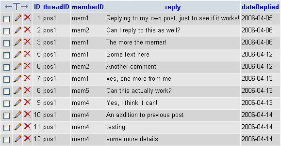
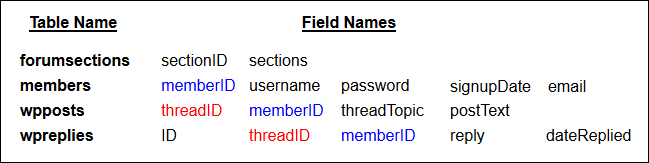

The Forum Reply Tables
This lesson is part of an ongoing Foruml tutorial. The first part is here: Build your own Forum, along with all the files you need. The previous lesson is here.
There are 5 Reply tables in our database, one for each section of the forum. Here's the table names, and a short description:
wpreplies - All replies for the Microsoft
Word section
xlreplies - All replies for the Microsoft Excel section
phreplies - All replies for the Microsoft PHP section
vbreplies - All replies for the Microsoft Visual Basic .NET section
wdreplies - All replies for the Microsoft Web Design section
Again, all these tables have the same structure. So we'll just examine the wpreplies table. In phpMyAdmin, click the wpreplies table on the left hand side. Then click the Browse link at the top of the page. You should see the following:

There are five fields in this table: ID, threadID, memberID, reply, and dateReplied. Here's what they do:
ID - the primary Key. An auto incrementing
number.
threadID - used to identify which post a member is replying to
memberID - used to identify which member replied to a post
reply - the text of the reply
dateReplied - the date the meber replied to the post
At the moment, the only Post to have any replies is pos1. That's why there are no other values in this field. But if other posts have replies they would be labelled pos2, pos3, etc. The threadID of the wpposts table is linked to the threadID of the wpreplies table. You can then say, "Select all the replies where there is a threadID match."
The memberID field is also present in this table. This allows us to link to the members table and display the username of the member who replied.
To get a clearer idea of how this database is structured, study the following list:

These are the tables we'll be working with, when we do our coding. The memberID is in three of the four tables above; the threadID is in two of the tables. We'll be using these fields to link information. When you construct your own databases, it's important to consider which fields you can use to link information in different tables. Planning like this can speed things up when you're pulling data from your databases with PHP code.
Now that you have a decent grasp of just how the database is constructed, we can take a look at the code.